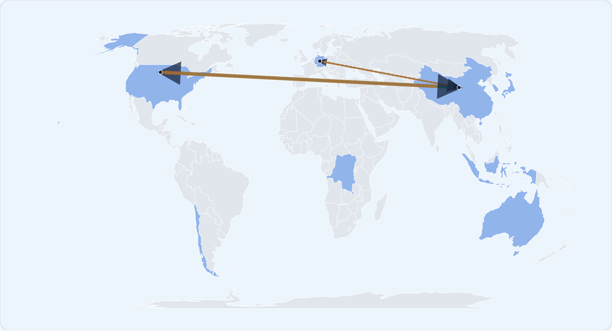
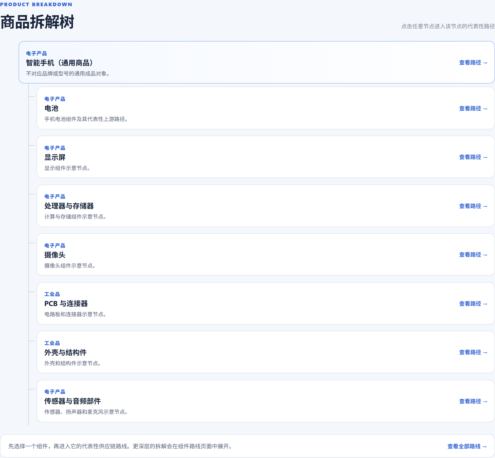
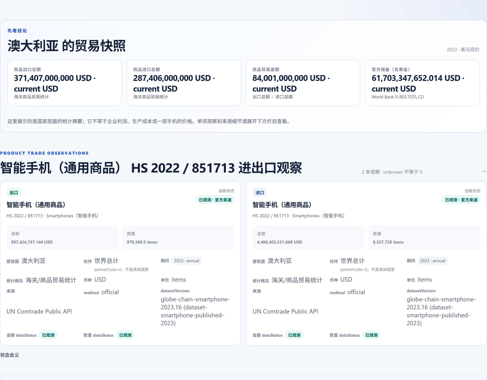
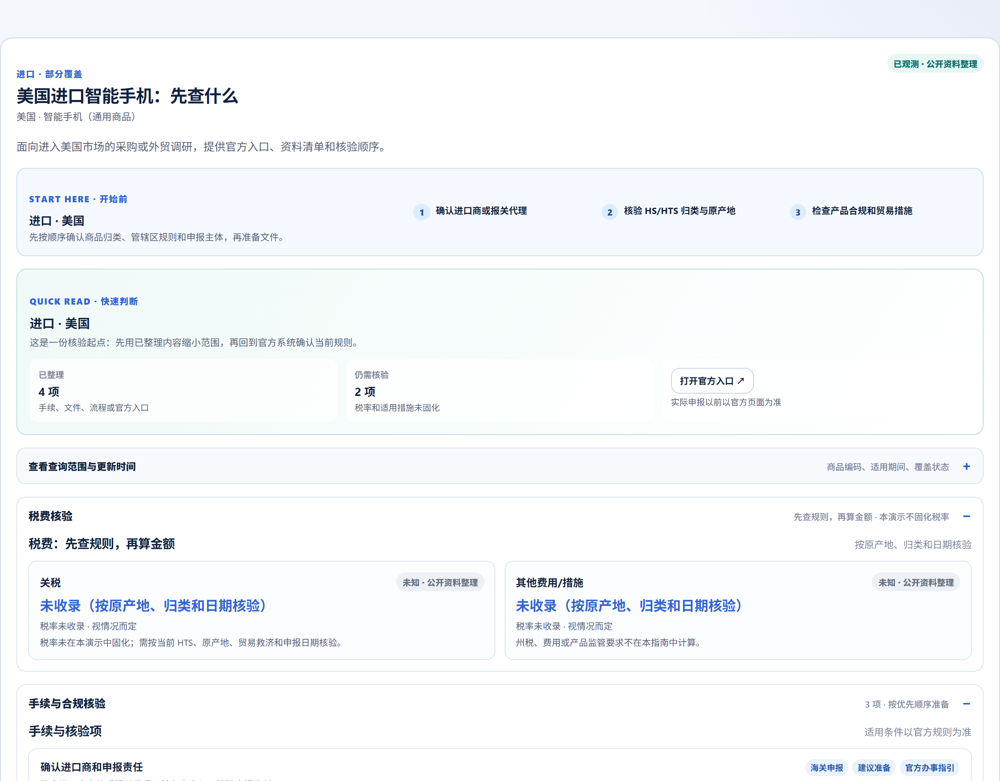

资料散落各处
海关库、产业报告、政策文件。
普通人难读，研究者靠手工拼。

GlobeChain
全球商品供应链与贸易数据可视化平台
大工黑客松 S2 · 奇绩创坛赛道「为现实打个补丁」
这条链，你平时却看不见。
澳大利亚
刚果民主共和国
中国台湾
中国大陆
全球
产业角色阅读顺序，不是连续双边流向，也不证明某台手机的来处。
角色资料：USGS · IEA · TSMC 年报 · 中国国家统计局；中国台湾芯片角色不属于当前地图的 9 个国家/地区记录。
海关库、产业报告、政策文件。
普通人难读，研究者靠手工拼。
代表性产业路线，
常被误读成一台手机的真实路径。
海关记录了多少贸易，
不等于企业赚了多少钱。
缺的是一个整理好、讲清楚、不瞎猜的起点。
问题定义：项目研究假设，尚未完成系统用户访谈验证。
拆解树 / 供应链路线 / 账本 + 地图
真实产品 /map · UN Comtrade 2023 · Natural Earth 1:110m；此图连线为贸易统计观察，不是供应链或运输路线。

1 部手机
7 个直接组件
点进电池，能看到原料来自哪些国家，
以及经过哪些加工环节。
已有路线与待补证组件分别标注。
真实产品 /products/generic-smartphone；7 为当前 release 的直接组件数。首个 Demo 为通用智能手机，模型可复用到更多商品门类。
从原料到组装，先看关系，再追证据。
原料
正极 / 负极
制造
集成
成品
每节点带来源与证据等级
数量未知不填零
不代表某批货的唯一真实路径
代表性流程概括：当前 published 电池路线、USGS / IEA 与路线整理方法；完整真实产品素材：assets/supply-chain-route.png。

真实产品国家账本 · World Bank WDI / UN Comtrade · 2023 · USD 现价；宏观商品贸易与 HS 851713 世界总计观察分开。
JSON 快照
manifest
Zod · 只读仓储
商品 / 国家 / 来源
服务端 / 本地 d3-geo
不可变版本 + 指针发布/回滚 · CI 自动校验 · 依赖准备后断网可演示 · 无需 API 密钥
01 每条信息保留来源、年份与版本
02 不知道就标待核验：unknown ≠ 0
03 不把示意当事实，不把贸易额当利润
当前实现：只读快照数据层；地图在 Web 内；无真实数据库、自动调度管线或 CI 部署任务。官方入口需联网。
看懂商品之后，
继续查进入市场前要核验什么。
当前包括美国进口、德国/欧盟进口、
中国进出口示范；不同管辖区分别核验。

人工整理的静态政策研究起点；实际规则需按当前日期、原产地与具体规格在官方系统重新核验。
GlobeChain
覆盖有限 · 未收录税率显示待核验
下一步：更新近年数据，验证用户体验，再扩展商品门类与国家。
https://github.com/<所有者确认的账号>/Global-Chain
仓库地址待所有者确认；尚未部署线上 Demo。示范数据不代表实时全球供应链全貌。